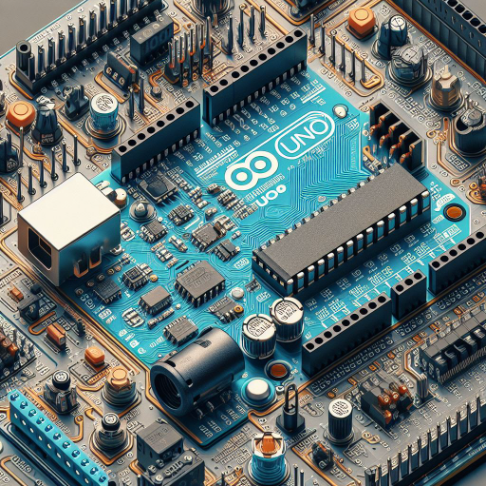

Com problemas de informação e cuidado com os medicamentos.
desenvolvemos um circuito com o Arduíno UNO para estar monitorando os remédios,
assim seberemos como está a situação deles como Iluminação, temperatura, umidade e estoque.
Assim, as pessoas poderão ver se a maneira de guardar seus medicamentos está correto ou não e poderão visualizar através de um monitor pequeno(LCD).
Criando um arduino com :
•Arduíno UNO
• DHT22
• LCD 16x4
• LDR sensor
• LEDs
• Sensor Ultrasonic
• Programação C++
De acordo com a imagem acima utilizaremos um arduíno UNO para aplicar os seguinte componentes:
DHT22, LCD, LDR e os LEDs com isso teremos que aplicar a linguagem de programação C++.
para Saber mais sobre a solução vá para HOME,assista o video com mais explicações para o projeto.
